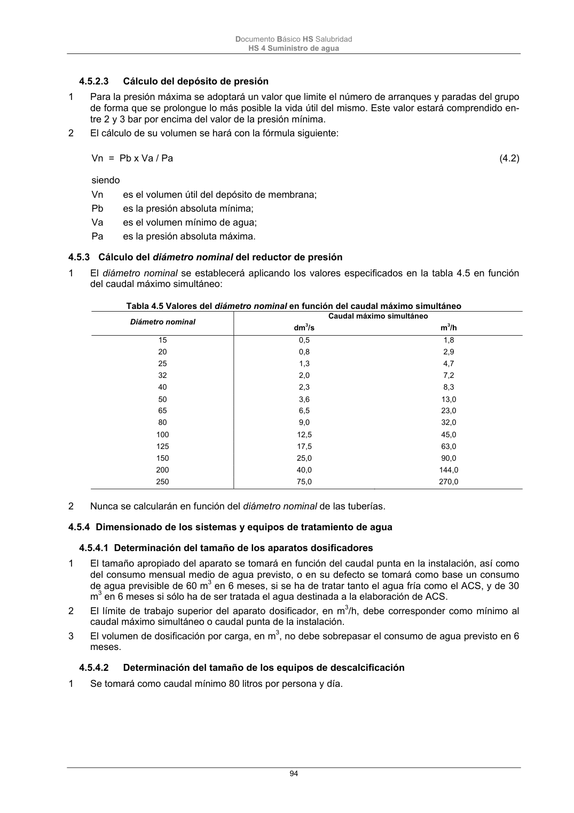

DB-HS · Página 94 · versión 2022-06-14
SHA256: 68df3caacc95f71aee2ec1ba7b2c65ae66155c21e3a8785521b8fdd4fd640d3b · página física 94 de 184 · métodos de encabezado
solo si están cotejados.
Formatos: Markdown · JSON de bloques · PDF p. 94 · imagen PNG
Documento Básico HS Salubridad HS 4 Suministro de agua 94 4.5.2.3 Cálculo del depósito de presión 1 Para la presión máxima se adoptará un valor que limite el número de arranques y paradas del grupo de forma que se prolongue lo más posible la vida útil del mismo. Este valor estará comprendido en- tre 2 y 3 bar por encima del valor de la presión mínima. 2 El cálculo de su volumen se hará con la fórmula siguiente: Vn = Pb x Va / Pa (4.2) siendo Vn es el volumen útil del depósito de membrana; Pb es la presión absoluta mínima; Va es el volumen mínimo de agua; Pa es la presión absoluta máxima. 4.5.3 Cálculo del diámetro nominal del reductor de presión 1 El diámetro nominal se establecerá aplicando los valores especificados en la tabla 4.5 en función del caudal máximo simultáneo: Tabla 4.5 Valores del diámetro nominal en función del caudal máximo simultáneo Diámetro nominal Caudal máximo simultáneo dm 3/s m 3/h 15 0,5 1,8 20 0,8 2,9 25 1,3 4,7 32 2,0 7,2 40 2,3 8,3 50 3,6 13,0 65 6,5 23,0 80 9,0 32,0 100 12,5 45,0 125 17,5 63,0 150 25,0 90,0 200 40,0 144,0 250 75,0 270,0 2 Nunca se calcularán en función del diámetro nominal de las tuberías. 4.5.4 Dimensionado de los sistemas y equipos de tratamiento de agua 4.5.4.1 Determinación del tamaño de los aparatos dosificadores 1 El tamaño apropiado del aparato se tomará en función del caudal punta en la instalación, así como del consumo mensual medio de agua previsto, o en su defecto se tomará como base un consumo de agua previsible de 60 m3 en 6 meses, si se ha de tratar tanto el agua fría como el ACS, y de 30 m3 en 6 meses si sólo ha de ser tratada el agua destinada a la elaboración de ACS. 2 El límite de trabajo superior del aparato dosificador, en m3/h, debe corresponder como mínimo al caudal máximo simultáneo o caudal punta de la instalación. 3 El volumen de dosificación por carga, en m3, no debe sobrepasar el consumo de agua previsto en 6 meses. 4.5.4.2 Determinación del tamaño de los equipos de descalcificación 1 Se tomará como caudal mínimo 80 litros por persona y día.
